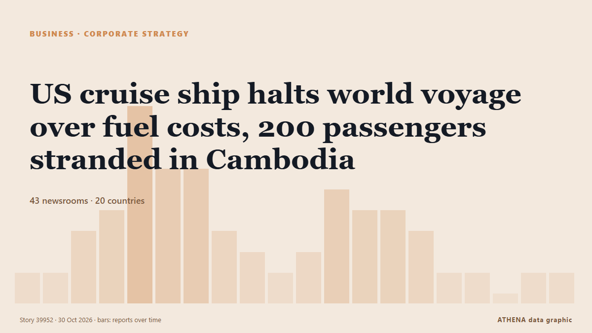

US cruise ship halts world voyage over fuel costs, 200 passengers stranded in Cambodia

Villa Vie Residences has suspended operations of its residential cruise ship Villa Vie Odyssey in Cambodia, forcing residents to disembark as soaring fuel costs push the company toward financial… de gCaptain
Informado de forma independiente por 42 medios de 20 países desde el 27 oct; el primero fue gCaptain; la cobertura va perdiendo fuerza. ATHENA califica el riesgo como elevado (4.3/10), sobre todo por la gravedad del daño descrito y su alcance geográfico y sectorial. La confianza es del 87 % (alta): lo corroboran 42 medios independientes, con una fiabilidad media de las fuentes del 75 %. Medios por país: Estados Unidos (10), Reino Unido (6), Irlanda (3). Cobertura: del 27 oct al 29 oct, 35 horas.
Por qué importa: Las noticias de empresas e inversión muestran hacia dónde se mueve el capital y qué sectores ganan o pierden terreno.
Qué ha cambiado: 19 informaciones nuevas de 15 redacciones en las 24 horas hasta el 30 oct.
Primer titular: Luxury cruise passengers stranded in Cambodia due to soaring fuel costs
Los titulares se muestran en inglés, tal como se publicaron.
De un vistazo
Seleccionado, puntuado y redactado por la metodología publicada de ATHENA. Ningún editor interviene en eventos concretos. Cómo se elabora ›
| 27 Oct 19:24 UTC | 1 |
|---|---|
| 27 Oct 22:24 UTC | 1 |
| 28 Oct 01:24 UTC | 3 |
| 28 Oct 04:24 UTC | 3 |
| 28 Oct 07:24 UTC | 9 |
| 28 Oct 10:24 UTC | 6 |
| 28 Oct 13:24 UTC | 6 |
| 28 Oct 16:24 UTC | 3 |
| 28 Oct 19:24 UTC | 2 |
| 28 Oct 22:24 UTC | 1 |
| 29 Oct 01:24 UTC | 2 |
| 29 Oct 04:24 UTC | 5 |
| 29 Oct 07:24 UTC | 4 |
| 29 Oct 10:24 UTC | 4 |
| 29 Oct 13:24 UTC | 2 |
| 29 Oct 16:24 UTC | 1 |
| 29 Oct 19:24 UTC | 1 |
| 29 Oct 22:24 UTC | 0 |
| 30 Oct 01:24 UTC | 1 |
| 30 Oct 04:24 UTC | 1 |
| 27 Oct 20:23 UTC | 1.1 |
|---|---|
| 28 Oct 10:01 UTC | 1.9 |
| 28 Oct 13:39 UTC | 3.9 |
| 28 Oct 19:01 UTC | 4.8 |
| 30 Oct 04:24 UTC | 4.3 |
Por qué estas cifras
Importancia
Riesgo
Confianza
La cobertura: quién informó y cuándo
titular tal como se publicó · abre el original- gCaptain · Estados UnidosVilla Vie Odyssey’s ‘Endless’ World Cruise Comes to a Halt in Cambodia as Fuel Costs Soar
- The Straits Times · SingapurCruise strands passengers in Cambodia after fuel surge
- MyJoyOnline · GhanaLuxury cruise passengers stranded in Cambodia due to soaring fuel costs
- BBC Business · Reino UnidoLuxury cruise passengers stranded in Cambodia due to soaring fuel costs
- Oman Observer · Omán200 'Cruise for life' passengers stranded due to fuel costs
- Daily Mirror · Sri LankaLuxury cruise passengers stranded in Cambodia due to soaring fuel costs
- RTÉ News · IrlandaStranded cruise passengers seek investor to continue trip
- Bangkok Post — page reader · Tailandia200 ‘cruise for life’ passengers stranded in Cambodia
- CNA (Channel NewsAsia) · SingapurTwo hundred 'cruise for life' passengers stranded in Cambodia
- NPR · Estados UnidosA U.S. cruise ship ends voyage due to fuel costs and passengers lose their homes
- Free Malaysia Today · Malasia200 cruise ship passengers stranded in Cambodia
- Irish Independent · Irlanda‘Cruise for life’ passengers who boarded ship in Belfast left stranded in Cambodia
- ABC News Australia · AustraliaHundreds of cruise passengers stranded in Cambodia due to soaring fuel costs
- IOL · SudáfricaTwo hundred 'Cruise for life' passengers stranded in Cambodia after company runs out of money
- Sky News (World) · Reino UnidoCruise ship left stranded in Cambodia after 'soaring fuel costs'
- Manchester Evening News · Reino Unido650 passengers who live on 'permanent cruise' going around the world ordered to leave
- The Island · Sri LankaLuxury cruise passengers stranded in Cambodia due to soaring fuel costs
- TheJournal.ie · IrlandaAround 200 passengers on ‘cruise for life’ stranded in Cambodia after company runs out of money
- Gulf News · Emiratos Árabes UnidosOver 200 cruise passengers stranded in Cambodia as operator halts voyage over fuel costs
- AzerNews · AzerbaiyánFuel costs force Odyssey to suspend three-year global voyage
- Gulf News · Emiratos Árabes UnidosIran war hits ‘cruise for life’: 200 stranded as operator runs out of money
- CNBC World · Estados UnidosLuxury round-the-world cruise ends abruptly as fuel costs skyrocket
- CBS News (World) · Estados UnidosU.S. cruise ship suspends around-the-world voyage due to fuel costs
- Belfast Telegraph · Reino UnidoLuxury cruise previously stuck in Belfast for months halts voyage as fuel costs soar leaving passengers stranded in Cambodia
- News of Bahrain · Baréin200 cruise passengers stranded in Cambodia after voyage suspended
- Fortune · Estados UnidosA cruise ship promising life at sea suspended operations and disembarked passengers in Cambodia, blaming monthly fuel expenses soaring over 300%
- The Hill · Estados UnidosPassenger ship suspends global cruise because of fuel costs, stranding hundreds
- CBC News · CanadáCruise billed as floating home suspends global voyage over fuel costs, stranding passengers
- The Guardian · Reino UnidoPassengers stranded in Cambodia after cruise halted due to high fuel costs
- Al Jazeera English · CatarFuel costs force US cruise ship to suspend multiyear voyage in Cambodia
- The New York Times (World) · Estados UnidosAn ‘Endless’ Cruise Around the World Is Suspended, Leaving Passengers Stranded
- News of Bahrain · BaréinIran war fuel costs strand 200 cruise passengers
- Nile Post · UgandaLuxury cruise passengers stranded in Cambodia due to soaring fuel costs
- NBC News (World) · Estados UnidosCruise ship on global voyage leaves passengers stranded after cutting trip short
- CBS News (World) · Estados UnidosCruise ship passengers stranded after operator says it ran out of money due to fuel costs
- Times of India · IndiaFuel costs jump from $1,800 to $8,000: Cruise ship residents forced ashore in Cambodia
- Bangkok Post — page reader · TailandiaFuel prices set to fall as 'untrue costs' exposed
- Indian Express · IndiaAhead of India visit, luxury cruise passengers asked to ‘abandon ship’
- NPR World · Estados UnidosA U.S. cruise ship suspends a global voyage due to fuel costs, stranding 200 passengers
- Belfast Telegraph · Reino UnidoPassenger on cruise ship once stranded in Belfast now stranded in Cambodia ‘not certain what next steps are’